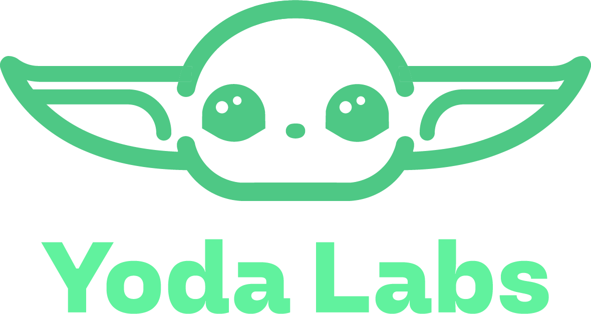

Leonel
Rol en el equipo
Ver perfil
Desarrollando el futuro del entorno web. En Yoda Labs creemos que el verdadero dominio del código nace del equilibrio: el lado luminoso del frontend, que da forma y vida a cada interfaz, y la fuerza del backend, que sostiene todo desde las sombras. Codificamos soluciones limpias y funcionales, porque un buen desarrollo no elige un lado: los conecta.
Rol en el equipo
Ver perfilRol en el equipo
Ver perfilRol en el equipo
Ver perfilRol en el equipo
Ver perfilDesarrollo y Diseño
Ver perfil